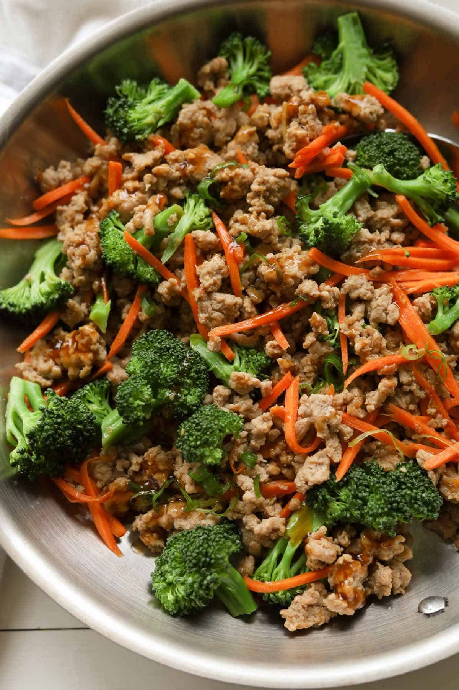

Ground Turkey Teriyaki Rice Bowl Recipe

Ground Turkey Teriyaki Rice Bowl
This teriyaki bowl is simple, sweet, and healthy! Enjoy an easy recipe that your whole family will love.
Ingredients
Teriyaki Sauce
- 1/2 cup Less Sodium Soy Sauce
- ▢1/4 cup water
- 2 tablespoons Red Wine Vinegar
- 2 tablespoons brown sugar
- 2 tablespoons granulated sugar
- 2 teaspoons minced garlic
- 1 teaspoon ground ginger
- 1 tablespoon cornstarch
- 2 tablespoons warm water
Ground Turkey
- 1 tablespoon vegetable oil
- 1/2 cup diced onion
- 2 tablespoons minced garlic
- 1 pound Ground Turkey
- 1 cup finely chopped broccoli
- 2 large carrots peeled and grated
- 2 green onions diced for garnish
- 4 cups cooked white or brown rice divided
Steps
- Mix soy sauce, ¼ cup water, red wine vinegar, sugars, garlic and ginger in a small saucepan over medium heat. Stir with a whisk until sugar is dissolved.
- Place flour in a shallow dish. Coat chicken in flour and shake off excess.
- In a small bowl, whisk together 2 tablespoons warm water and cornstarch until cornstarch is completely dissolved.
- Place chicken in skillet and cook for 2 to 3 minutes until golden. Turn and cook the other side for 1 minute.
- Heat sauce over medium high heat. Slowly whisk in cornstarch mixture and simmer until thickened. Remove from heat and set aside.
- Make a bit of room in the pan and add garlic and top with remaining dab of butter. Stir garlic briefly once butter melts.
- Heat vegetable oil in a large skillet over medium-high heat. Add diced onions and cook until soft.
- Turn chicken to coat in sauce. If the sauce gets too thick, add a touch of water and stir.
- Crumble ground turkey and garlic into the pan and cook until turkey is about half cooked. Add grated carrots and chopped broccoli and continue to cook until turkey is no longer pink.
- Pour teriyaki sauce over cooked turkey and vegetable mixture and stir. Simmer for about five minutes to combine the flavors.
- Spoon meat over rice or noodles. Garnish with green onions and serve immediately.